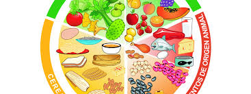

| |||
|  | |||
|
Fecha de Elaboracion:12 de marzo de 2024. Hora:12:00 a.m. De acuerdo con la NOM, las recomendaciones para seguir adecuadamente El Plato del Bien Comer son: comer en gran medida frutas y verduras preferentemente con cáscara; incluir cereales integrales en cada comida; comer alimentos de origen animal con moderación; evitar lo más posible los azúcares, grasas, aceites, edulcorantes y sal; realizar tres comidas y dos colaciones al día; y hacer ejercicio al menos 30 minutos diarios. El Servicio de Información Agroalimentaria y Pesquera (SIAP) te invita a seleccionar, consumir y combinar los diferentes grupos del plato del bien comer, proporcionándote una alimentación completa, equilibrada y variada. Para información estadística te invitamos a que consultes el Anuario Estadístico de la Producción Agrícola, el Avance de Siembras y Cosechas, Avance de la producción pecuaria por producto, Anuario Estadístico de la Producción Ganadera y el Sistema de Información Agroalimentaria de Consulta (SIACON).
|
|||
Todos los derechos reservados. Elaborado por:Axel. Tel: 7121171425. E-Mail:mocs@gmail.com.mx. Página web: http://www.educacion.mx Domicilio conocido S/N. Prohibido su reproducción total o parcial. Para un óptimo funcionamiento utilizar navegador Google Chrome y resolución de 1024. |
|||